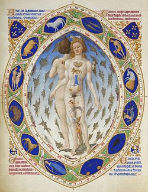

La astrología se basa en una serie de creencias. Según las cuales, a partir de la interpretación del movimiento de los astros, pueden conocerse y pronosticarse los acontecimientos terrenos, pues estos están vinculados de alguna forma con nuestra realidad. Actualmente, es considerada por la ciencia como una pseudociencia o como una simple superstición. Pues no es capaz realmente de explicar los fenómenos del universo. Además, no se ha encontrado una forma científica de explicar de qué manera los astros influyen en los seres humanos y la historia. Una aplicación muy hablada de la astrología es en la elaboración de los horóscopos. Según los cuales pueden predecirse las personalidades y la historia de vida de una persona al conocer la posición de los astros en el momento del nacimiento.
Vamos a ver los conceptos más básicos para entender esta materia. ¿Quieres saber en qué consiste exactamente?. Estos son los cinco conceptos que tienes que saber:
- Se encarga de relacionar la naturaleza interna y externa de las cosas. Toma como desarrollo los planetas de nuestro sistema solar y el mapa celestial que dibuja los 12 signos zodiaco. Intenta ayudar a entender la vida desde la visión de las situaciones y tendencias personales.
- Los astrólogos utilizan las matemáticas para establecer las coordenadas adecuadas, calculando la posición de los planetas y viendo cómo estos se relacionan con las características personales de cada individuo. Un astrólogo no puede pretender saber cosas de la vida de su cliente. Sino que busca realzar las cualidades de dicho individuo.
- La astrología semanal o diaria se basa fundamentalmente en los movimientos lunares. La Luna cambia de signo cada dos días. Por lo tanto, se trata de una visión parcial y superficial de lo que la tendencia astral nos sugiere.
- Desde siempre se ha consultado la astrología. Importantes dirigentes políticos la han utilizado para sus fines. Julio César, Napoleón, Churchill, Hitler, Mitterrand o Nixon. Se valieron de un astrólogo para tomar grandes decisiones.
- En cuanto a los tránsitos planetarios, se llama así al curso de los planetas por los signos del zodiaco. El Sol cambia cada 30 días de signo. La Luna cada dos días, Mercurio y Venus cada 25 días. Marte cada 45 días. Júpiter se queda 1 año en un signo, Saturno dos años y medio, Urano 7 años, Neptuno unos 14 años y Plutón unos 15 años, todo ello aproximado, ya que varían según los años. Uno de los tránsitos importantes actualmente es el de Saturno en Sagitario.
Los doce signos del zodiaco están representados por doce sectores iguales de 30º cada uno en la carta astral. El signo en el que se encuentra el Sol en nuestra carta natal es nuestro signo solar, popularmente conocido como signo del zodiaco.
El Sol recorre el zodiaco tropical en el sentido contrario a las agujas del reloj. Parte del punto Aries aproximadamente el 21 de marzo, momento en que empieza el nuevo año astrológico. Aries corresponde al equinoccio de primavera y es también llamado punto vernal. Se da en el punto de intersección entre la eclíptica y el Ecuador celeste, pasando el Sol en su movimiento aparente del hemisferio Sur al Norte.
Los signos del zodiaco se van alternando de forma que a un signo positivo siempre le sigue uno negativo y viceversa, de manera que:
- Los signos con polaridad positiva son Aries, Géminis, Leo, Libra, Sagitario y Acuario.
- Los signos con polaridad negativa son Tauro, Cáncer, Virgo, Escorpio, Capricornio y Piscis.
También existen dentro de los signos del zodiaco, los cuatros elementos y son los siguientes:
- Signos de fuego: Energía, iniciativa, dinamismo y expansión. El inicio de la acción y la fuerza para el cambio. Los signos de fuego son Aries, Leo y Sagitario.
- Signos de tierra: Los placeres, lo material, lo práctico, las bases de la vida humana y la búsqueda de bienestar, estabilidad y seguridad. Pertenecen al elemento tierra Tauro, Virgo y Capricornio.
- Signos de aire: El contacto con los demás, el intelecto, la lógica, la comunicación, las relaciones, el intercambio de ideas. Géminis, Libra y Acuario son de aire.
- Signos de agua: Las emociones, los sentimientos, la intuición y el instinto. Sensibilidad, empatía y compasión. Los signos de agua son cáncer, escorpio y piscis.
